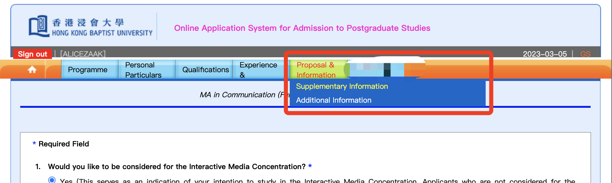

Supplementary Materials & Proposal补充材料和个人陈述
It contains 2 Sections: Supplementary Information & Additional Information

1.Some programmes are required to take a pre-school course for interdisciplinary study. If there is an overlap between your undergraduate program and the pre-school program, you can apply for an exemption in this section. Some programmes may also present several questions on this page that require your response, which related to the field of study. Overall, you can answer these questions based on your preferences. (I won’t show any snapshot about this section because differentials exist between majors.)
2.In the Second section "Additional Information"(see attached pic), there will be a question related to your field of study that requires you to provide a personal statement. This question can be found on each program's introduction page (see from More), and you can think your answer to this question before starting the online application. Remember to complete your statement within the specified word limit.
After conveying your statement, you are ready to step ahead to the last step Files Upload before transfering.
这一步包含了两个板块：补充信息和其他信息
1.对于转专业或跨专业的申请人而言，部分课程可能需要申请人完成某些课前的学习（俗称“预科”）。如果在本科毕业到预科之间，你已经完成过与预科重叠的学习，你可以在这个页面申请免除预科。某些专业还会在这个页面呈现若干需要你回答的问题，可能与专业方向相关，总而言之按照你的喜好回答就好了。这里我不会放任何截图，因为不同专业间差距太大了。
2.在“additional information”中，会有一个与专业相关的问题希望你进行陈述（俗称的个人陈述）。这个问题会在每个专业的介绍页面找到，你可以选择在网申开始前就考虑好这个问题的答案。记得要在规定的字数内完成自述。
如果这一步也完成，那么就可以准备最后一步，即所有附件材料的上传了。